Indigo Electrical guides
Electrical advice for safer homes and workplaces.
Practical safety guidance, landlord checks, lighting ideas and maintenance explainers from local NICEIC registered electricians.
Showing 79 guides
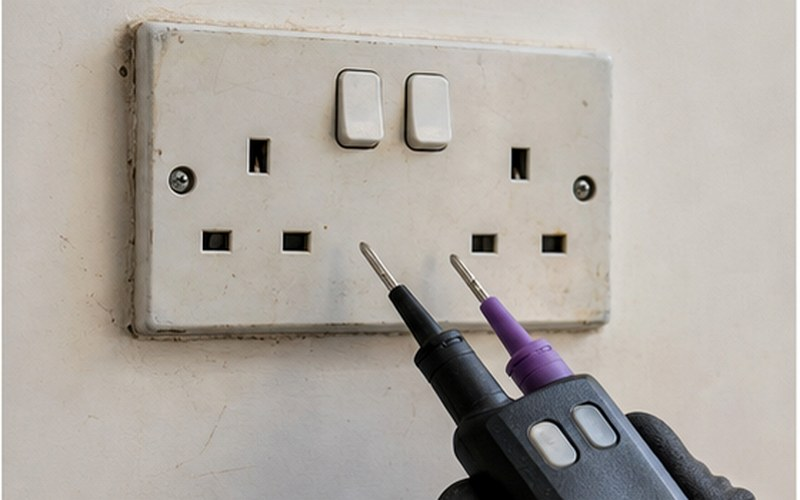
The Danger of Electricity: Injuries You Want to Avoid
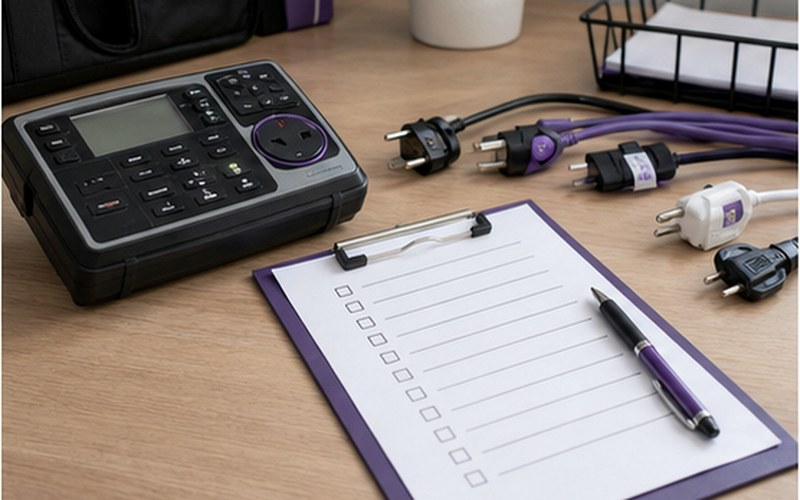
25 Step Office Electrical Safety Checklist
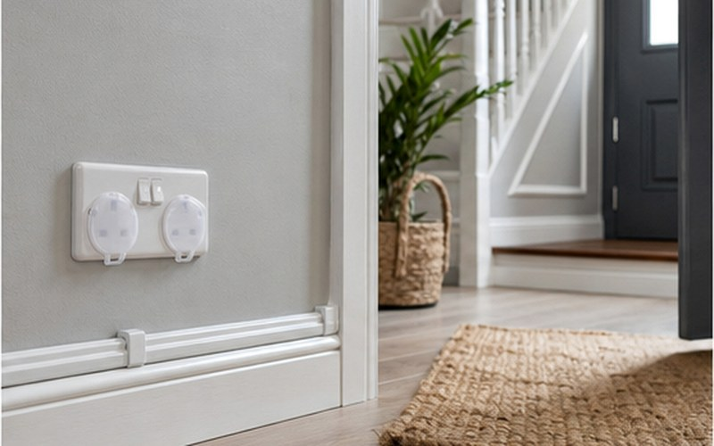
9 Electrical Safety Tips for Pet Owners
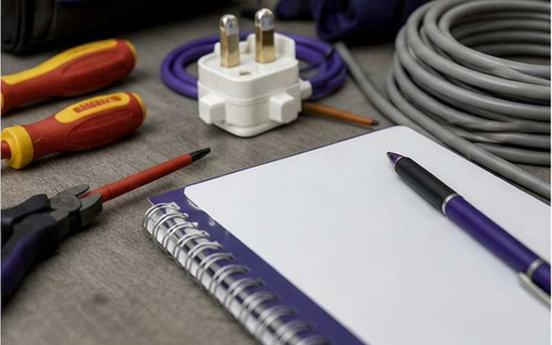
Glossary of Electrical Terms
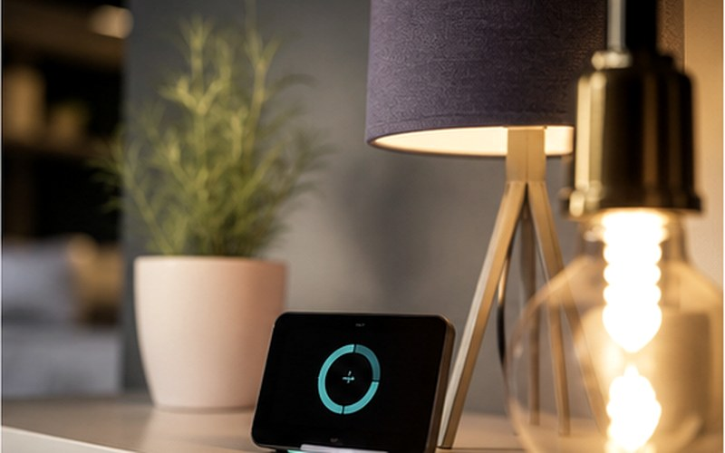
How the UK Generates Electricity
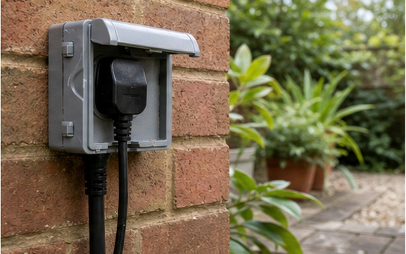
7 Garden Lighting Tips for Those Long Summer Nights
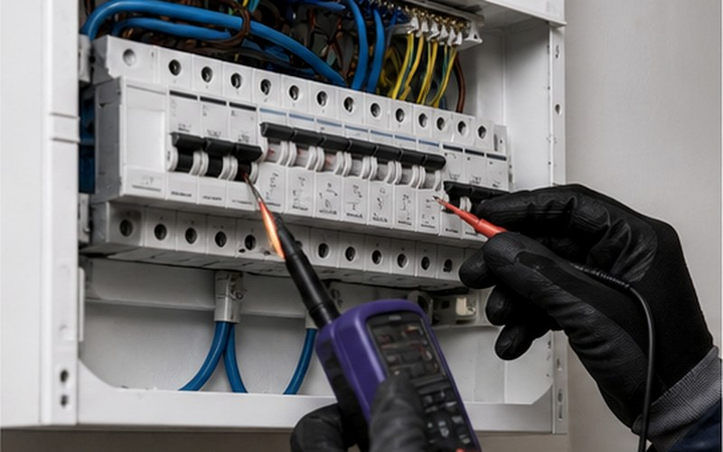
Coronavirus Lockdown Electrical Safety Tips
7 Common Electrical Problems in UK Homes
The 9 Most Important Electrical Inventions Ever
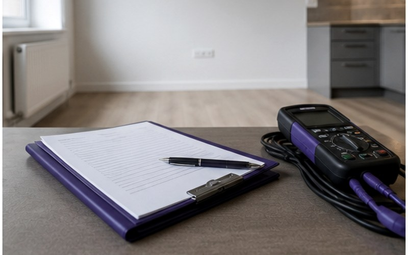
10 Safety Responsibilities for Landlords
What Makes Up Your Energy Bill
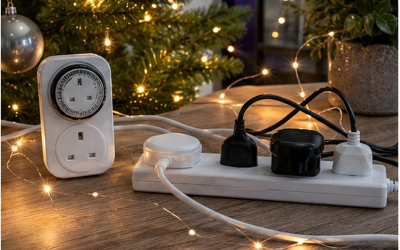
8 Fun Facts About Electricity at Christmas
6 Electrical Safety Tips for Christmas
How to Save Energy & Reduce Your Bills
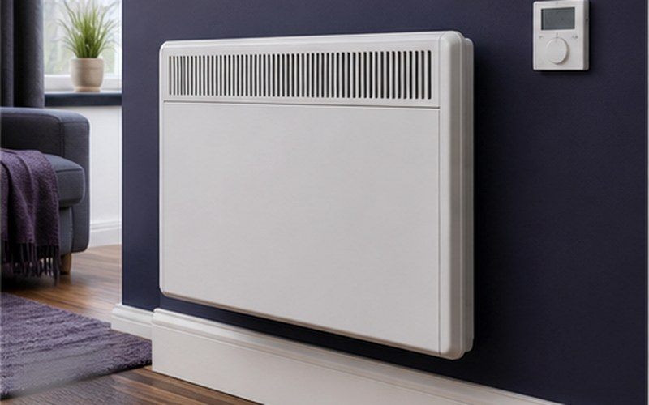
8 Electrical Heating Safety Tips
7 Summer Electrical Safety Tips for Kids
10 Warning Signs You Need to Call an Electrician
The Anatomy of a Plug
The World’s Top 20 Electricity Producers
20 Electrical Safety Tips for Kids
What You Need to Know About the Electrical Installation Condition Report (EICR)
What You Need to Know About Storage Heaters (Infographic)
19 Christmas Lights Safety Tips (Infographic)
11 Safety Precautions When Working With Electricity (Infographic)
Where The UK Gets Its Electricity From (Infographic)
Electrical Safety Obligations for Landlords (Infographic)
How To Find The Right Light Bulb (Infographic)
5 Electrical DIY Safety Tips (Infographic)
Workplace Electrical Safety: Employers Responsibilities (Infographic)
When Should You Call an Electrician? (Infographic)
7 Tips for Safer Garden Lighting (Infographic)
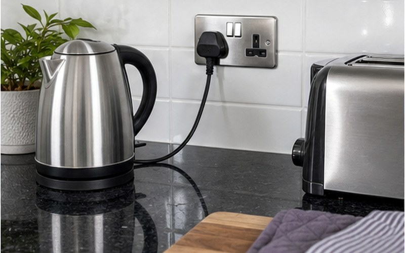
8 Electrical Safety Tips for the Kitchen (Infographic)
Top 5 Home Appliances That Use The Most Electricity (Infographic)
20 Quick Tips to Lower Your Electric Bill (Infographic)
The 5 Best Electrical Inventions In The Last 20 Years (Infographic)
The World’s Top 10 Largest Electricity Producers (Infographic)
The Future of Electricity (Infographic)
5 Tips For Choosing The Right Light Bulb (Infographic)
Electrical Safety Outdoors: 5 Tips to Help You Stay Safe (Infographic)
9 Tips to Keep Your Children Safe Around Electricity (Infographic)
8 Tips to Boost Your Home’s Security With Outdoor Lighting (Infographic)
What Businesses Need to Know PAT Testing (Infographic)
9 Workplace Electrical Safety Tips (Infographic)
How is Electricity Generated? (Infographic)
The Dangers of Electricity (Infographic)
4 Reasons to Upgrade Your Fuse Board (Infographic)
Christmas Tree Electrical Safety Tips (Infographic)
10 Fun Facts About Electricity (Infographic)
The Evolution of Television (Infographic)
7 Essential Questions to Ask an Electrician (Infographic)
8 Most Dangerous Home Electrical Hazards (Infographic)
The 15 Types of Electrical Plugs and Sockets Used Around the World (Infographic)
Which Type Of Mount Is Right For Your TV (Infographic)
6 Ways to Generate Energy at Home (Infographic)
8 Simple and Smart Ways to Cut Your Electricity Bill (Infographic)
10 Electric Safety Tips You Should Teach Your Kids (Infographic)
Top 5 Simple Ways to Prevent Home Fires (Infographic)
9 Legal Requirements for Landlords and Letting Agents (Infographic)
15 Tips for Electrical Safety at Christmas (Infographic)
The Cable Guide: Know Your Computer and TV Wires (Infographic)
How Much Do Your Electrical Gadgets Cost To Run? (Infographic)
5 Different Types of Networking Cables (Infographic)
5 Top Tips To Avoid An Electrical Emergency (Infographic)
Top 5 electrical safety tips for kids (Infographic)
How to choose and fit your smoke alarm (Infographic)
5 Reasons To Call An Electrician (Infographic)
Colour is key!
Own an electric car?…..Check out Rolec WallPod’s charging range!
MYTHBUSTER: Electrical Heating
New Metal Consumer Unit by CED
Wireless Power
Electricians must comply – Danger of falling cables at escape routes.
Danler’s Heater Boost Switch
Peace at last – Extractor fans
Intelligence means big savings.
Discreet trunking – Hide those ugly cables…
Amendment 3 BS 7671 due January 2015……..Looks like it’s Bye-Bye plastic Consumer Units.
Aico’s new RadioLINK Wireless Controller Ei450
MotionPro Night Owl Security Light
No matching guides found. Try a shorter search term or choose a different topic.